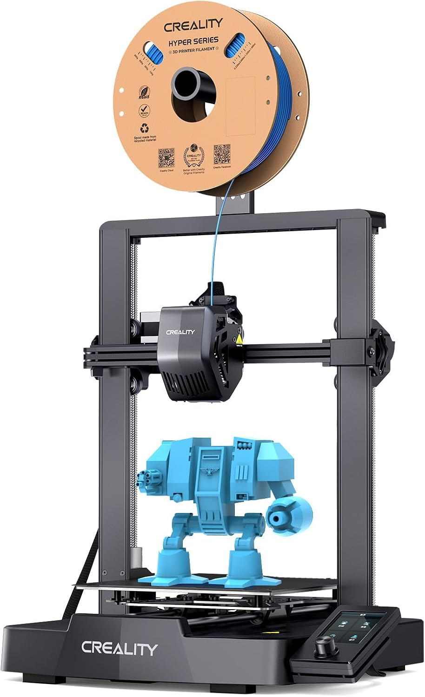

Amazon.ca · Ender 3 V3 SE
Creality Ender 3 V3 SE
La impresora 3D más común y económica, ideal para aprender y hacer piezas simples de drone como soportes, patas y protectores. Auto-nivelación CR Touch y 250 mm/s.
Ver precio en Amazon
- La opción más común y económica para empezar.
- Ideal para piezas simples: soportes, landing gear, cajas.
- Materiales recomendados: TPU, PLA (prueba) y PETG.
- Velocidad de hasta 250 mm/s con CR Touch (auto-nivelación).
- Extrusor directo "Sprite" y doble eje Z.
- Volumen de impresión 220×220×250 mm.